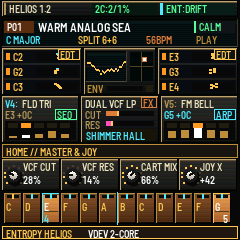
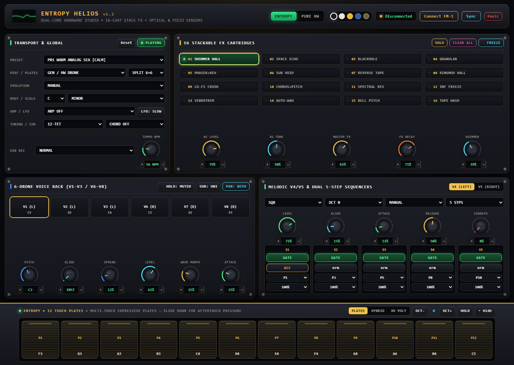
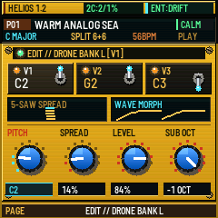
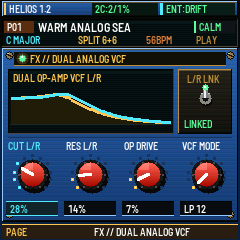
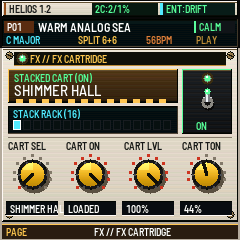
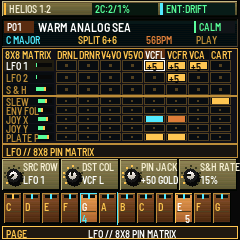
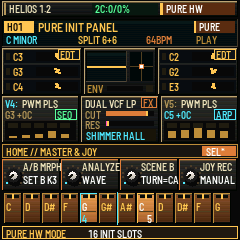

Entropy Helios transforms your M-VAVE FM-1 into two instruments in one: ENTROPY Mode (generative dual-core ambient engine with 18 handcrafted diverse presets + 8 user slots) and PURE HW Mode (16 blank INIT hardware slots with zero generative interference)—paired with a 3-Band Parametric Master EQ and flagship browser WebMIDI Hardware Studio.

Plug your M-VAVE FM-1 in over USB-C and control every single oscillator, filter, FX cartridge, sequencer step, and modular CV pin in real time. Click any theme below to preview the rack—your chosen theme syncs live to the FM-1's screen too.

Hit Sync to pull every voice pitch, glide, wave morph, sequencer step, 16-cartridge stack, 8×8 pin, and ENTROPY / PURE HW mode directly from the FM-1.
Drag 3D SVG rotary knobs, type exact notes like C3 into OLED boxes, flick the spring-return 3D joystick, or play the morphing Touch Plates / Hybrid / 8V Poly dock with live pressure meters.
Wave your hand over your webcam to sweep filters or XY morph like dual analog photoresistors, or tap your desk near the mic to physically kick the FM-1's 3-Spring Reverb Tank.
Save, load, and export all 8 Entropy user slots (E01–E08) and all 16 Pure HW slots (H01–H16) into a single portable .json backup file with one click.
Captured directly from Entropy Helios v1.3.3 firmware. Press any module button to zoom into full-screen tactile views with 3D color-coded knobs, live filter curves, magnetic FX cartridges, and all 5 color themes.
Live CRT waveform, 6 drone mini-scopes, dual 5-step sequencers, 12 copper touch plates & ENT:DRIFT.

5-saw spread & wave-morph visualizer, per-voice toggle switches, blue 3D knobs & per-drone Glide.

Real-time stereo op-amp filter response curve, L/R Link toggle, resonance, overdrive & 4 filter modes.

Gold-edge magnetic FX cartridge, 16-slot stack rack LEDs, and per-cartridge ON/OFF, Level & Tone.

Live source meters for LFO 1/2, S&H, Slew, Env Follower, Joystick X/Y & Plate Pressure patched to 8 destinations.

1-tap SEL + REC hides all generative presets and exposes 16 blank INIT hardware slots with zero drift.
Voices and stereo filters split cleanly across Core 0 and Core 1 in real time, leaving generous headroom for lush reverbs, zero-blip audio, and a 240×240 photorealistic hardware UI.
Six 5-oscillator swarm drone voices with wave morphing, per-drone adjustable glide, sub-octaves, and AR envelopes—paired with two expressive melodic voices, dual 5-step sequencers, and an 8-voice polyphonic play mode.
Switch live between Black, Cream, Amber Yellow, Cobalt Blue, and Olive anodized-style themes. Press any module button to smoothly expand it across 80% of the screen with giant 3D color-coded knobs.
Tap SEL + REC to switch between ENTROPY Mode (18 handcrafted presets + E01–E08 user slots) and PURE HW Mode (16 blank INIT hardware slots H01–H16 with zero autonomous drift).
Use the FM-1's 27 capacitive keys as 12 bottom-row touch plates, a Hybrid split keyboard, or an 8-voice poly synth with 12-TET, Just Intonation, Pythagorean, Bohlen-Pierce, and Maqam tunings.
Patch dual LFOs (with audio-rate speed switch), S&H, analog slew limiter, envelope follower, key pressure, and an 8-second recordable 2D joystick to any destination.
Route external audio over USB-C directly through the dual analog VCFs, 3-Spring Tank, and 16 stacked FX cartridges. Record at unity 0 dBFS with click-free speaker mute and external MIDI Clock sync.
Load any combination of effects simultaneously on FX → FX or directly from the WebMIDI Studio bay. Every cartridge has its own independent ON/OFF toggle, wet level (CART LVL), and tone/rate (CART TON)—plus a physical-modeled 3-Spring Reverb Tank with piezo kick.
Every module button cycles through its pages and exits cleanly back to HOME. Press SEL on any page to access its secondary SEL* knob layer, tap SEL + REC to toggle ENTROPY / PURE HW mode, or press GLO twice for the built-in Quick Help.
| Button | Pages (Cycles back to HOME) | Key Shortcuts |
|---|---|---|
EDIT | Drone Bank L (V1–V3) → Drone Bank R (V6–V8) → 6-Drone Macro | SELECT picks voice • ALGO adjusts per-drone Glide • SEL* for Wave Morph, Hold, Attack, Pan |
ARP | Melodic V4 → Melodic V5 | SEL + ARP cycles Arpeggiator • SEL* for Level, Attack, Release |
SEQ | 5-Step Seq L → 5-Step Seq R | Play any key to step-record • SEL* for Length, Probability, Accent |
FX | Dual Analog VCF → 16-Cart Stack FX | SEL + FX = Spring Piezo Kick • On Carts: K2=ON/OFF, REC=Solo Cart |
ENV | Preamp & Noise → 3-Band Parametric Master EQ | SEL* on Preamp = USB Audio In / Sub HPF / Tilt / Tape • On EQ: Low/Mid/High Freq & Q, REC = Flat 0dB |
LFO | 8×8 Modular CV Pin Matrix | SEL* for Slew Limiter, VCF LFO Depth, Joy Y, 5 Matrix Templates |
GLO | Chassis & Global → Quick Help | K1 switches all 5 Chassis Finishes • SEL* K3 = Audio-Rate LFO • SEL* K4 = USB / SPK MUTE |
SAVE | Preset Management | Short press = Reset Slot • SEL+SAVE = Save Slot • SEL+REC = Toggle ENTROPY / PURE HW |
No drivers or desktop software required. Open the standalone WebMIDI flasher in Chrome or Edge, plug in your M-VAVE FM-1 over USB-C, and click Install.
Verified with full browser OTA updates and permanent flash saves (E01–E08 Entropy slots, H01–H16 Pure HW slots & settings) on both FM-1 revisions: original Puya P25Q80 (JEDEC 85 60 14) units and newer UC25HQ80 (JEDEC B3 60 14) units.